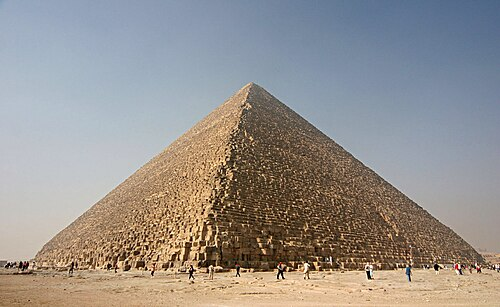
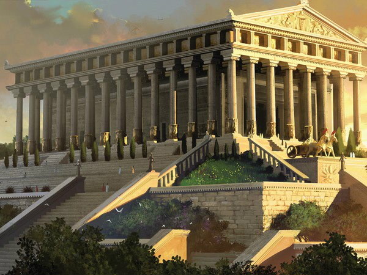
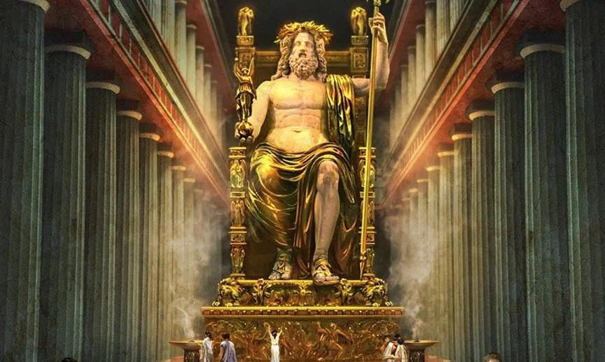
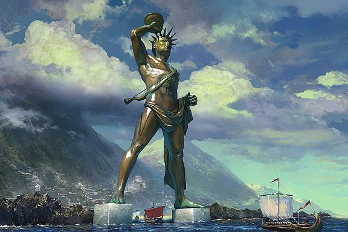

Cele 7 minuni ale lumii antice
Cele 7 Minuni ale Lumii reprezintă un grup de construcții și realizări excepționale
ale civilizațiilor antice, considerate cele mai impresionante creații ale omenirii din
punct de vedere arhitectural, artistic și ingineresc.
Ele au fost selectate în Antichitate
ca simboluri ale măiestriei umane, ale puterii politice și ale credinței religioase.
Importanța lor istorică constă în faptul că reflectă nivelul de dezvoltare al societăților care le-au creat,
iar valoarea culturală rezidă în influența pe care aceste monumente au avut-o asupra artei, arhitecturii și
imaginației colective de-a lungul secolelor, devenind repere universale ale patrimoniului umanității .
Lista celor 7 minuni antice
Lista celor 7 minuni antice cronologic
- Marea Piramidă din Giza (cca. 2560 î.Hr.)
- Grădinile Semiramidei (cca. 600 î.Hr.)
- Templul zeiței Artemis din Efes (cca. 550 î.Hr.)
- Statuia lui Zeus din Olympia (cca. 435 î.Hr.)
- Mausoleul din Halicarnas (cca. 350 î.Hr.)
- Colosul din Rodos (cca. 280 î.Hr.)
- Farul din Alexandria (cca. 280–247 î.Hr.)
Marea Piramidă din Giza
Simbol al măreției Egiptului Antic
Aceasta este singura minune a lumii care nu necesită descrieri ale istoricilor din antichitate sau ale poeților.
Este cea mai veche și totuși singura care a supraviețuit timpului.

Marea Piramidă din Giza - cea mai veche dintre cele 7 Minuni ale Lumii Antice
Grădinile suspendate ale Semiramidei
Minunea legendară a Babilonului
Grădinile suspendate ale Semiramidei sunt considerate una dintre
cele mai misterioase minuni ale lumii antice, fiind descrise ca terase
suprapuse pline de vegetație luxuriantă. Se crede că au fost construite
în Babilon pentru a-i aminti reginei Semiramida de peisajele verzi ale patriei sale,
deși existența lor nu a fost confirmată arheologic.

Reprezentare artistică a Grădinilor suspendate ale Semiramidei,
cu terase verzi ridicate deasupra orașului Babilon.
Templul zeiței Artemis din Efes
Simbol al artei și credinței antice
Templul zeiței Artemis din Efes a fost unul dintre cele mai mari și mai frumoase temple ale Antichității,
dedicat zeiței vânătorii și fertilității. Construit din marmură, acesta impresiona prin dimensiunile sale
și prin bogatele decorațiuni, fiind considerat o capodoperă a arhitecturii grecești.

Reconstrucție artistică a Templului zeiței Artemis din Efes, renumit pentru coloanele sale impunătoare.
Statuia lui Zeus din Olympia
Expresie a măreției divine
Statuia lui Zeus din Olympia a fost o sculptură monumentală realizată de artistul grec Fidias, reprezentându-l
pe Zeus, regele zeilor. Confecționată din fildeș și aur, statuia se afla în templul din Olympia și impresiona
prin dimensiunile și detaliile sale artistice.

Statuia lui Zeus din Olympia, una dintre cele mai impunătoare sculpturi ale lumii antice.
Mausoleul din Halicarnas
Monument al memoriei și artei
Mausoleul din Halicarnas a fost un mormânt monumental construit pentru regele Mausol și soția sa, Artemisia.
Impresiona prin dimensiunile sale și prin combinația de elemente arhitecturale grecești și orientale, devenind
un model pentru construcțiile funerare ulterioare.

Reconstrucție a Mausoleului din Halicarnas, considerat una dintre cele mai elegante minuni ale lumii antice.
Colosul din Rodos
Simbol al victoriei și libertății
Colosul din Rodos a fost o statuie uriașă din bronz, dedicată zeului Helios, ridicată pentru a celebra victoria
locuitorilor insulei Rodos. Deși a existat doar câteva decenii, dimensiunile sale impresionante l-au transformat
într-una dintre cele mai cunoscute minuni ale lumii antice.

Reprezentare artistică a Colosului din Rodos, statuie monumentală care domina portul insulei.
Farul din Alexandria
Ghid al navigatorilor antici
Farul din Alexandria a fost construit pe insula Pharos și avea rolul de a orienta navele care intrau în portul orașului.
Considerat una dintre cele mai înalte construcții ale Antichității, farul reprezenta un important progres în domeniul
ingineriei și al navigației.

Reconstrucție a Farului din Alexandria, una dintre cele mai impresionante realizări tehnice ale lumii antice.
Concluzie
Cele șapte minuni ale lumii antice reprezintă
realizări excepționale ale civilizațiilor vechi, demonstrând nivelul avansat
de cunoștințe în arhitectură, artă și inginerie.
Aceste monumente nu au fost doar construcții impresionante, ci și
simboluri ale puterii, credinței și creativității umane,
influențând cultura și istoria până în prezent.
Linkuri utile